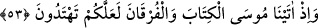

gerektirir. Şükrün aslı ise nimetleri düşünmek, gereğince şükretmekten âciz olduğumuzu
ızhâr etmektir. Sa’dî der ki:
Akıllı tabîatlı olanlar, nimeti minnet bilirler,
Her ni’met mukabilinde Hakk’a hamd ederler.
53. Doğru yolu bulasınız diye Mûsâ’ya Kitab’ı ve hak ile bâtılı ayıran hükümleri
verdik.
Kitap ve Furkan’dan maksad Tevrât’tır. Çünkü Tevrât, “hak ve bâtılı birbirinden
ayıran” demek olan “furkan” özelliğini hâizdir. Yoksa kitap ve furkan, birbirinden ayrı
şeyler değildir. Meselâ: Araplar cömert ve cesûr bir kişiyi anlatmak için: “– Yağmur ve
aslanla karşılaştım” derler. Yağmurla cömerdliği, aslanla cesâreti kasdedip bu iki sıfatı
birleştiren bir kimseyi kasdederler.
Tevrât’ı size indirmemizin sebebi, sizin onun üzerinde düşünüp hidâyet bulmanız ve
içindekilerle amel etmenizdir. Allah Teâlâ, Kitab’ı indirmesinin hikmetini böylece
zikretmiştir. Bu hikmet, onların Tevrât üzerinde düşünerek onun inzâlinin Mûsâ’nın hak
peygamber oluşuna delîl olduğunu anlamaları ve doğru yola tâbi olmak için gayret
göstermeleridir. Eğer böyle yaparsanız, Muhammed (s.a.)’in peygamberliğine de
inanırsınız. Çünkü o da birçok mûcize göstermiştir.
Rivâyet olunduğuna göre; Düşmanlarının denizde boğulması üzerine selâmete çıkan
İsrâîloğulları, Mısır’a girmişlerdi. Ancak aralarındaki meseleleri götürebilecekleri bir
şerîatları ve kitapları yoktu. Allah Teâlâ, Mûsâ’ya Tevrât’ı indirmeyi va’dedince o,
kavmine şöyle dedi: “Ey kavmim, ben Rabbimle buluşmak için gidiyorum. Size,
yapacaklarınızı ve terkedeceklerinizi açıklayan bir kitap getireceğim.”
Onlara kırk gün sonra geleceğini va’detti ve yerine kardeşi Hârûn’u vekil bıraktı.
Buluşma zamanı gelince Cibrîl, “Hayat atı” denilen ve dokunduğu şeyi dirilten bir atla
geldi. Bununla Mûsâ’yı götürecekti. Bâcirmî diyarından, Miha isimli bir kuyumcu olan
Sâmirî, Cebrâîl’i ve atının bastığı yerlerin yeşerdiğini görünce bu atta bir iş var
diyerek, Cebrâîl’in atının bastığı yerden bir avuç toprak aldı. Sâmirî, Hz. Mûsâ’ya tâbi
olmuş görünen, ancak ineğe tapan bir kavme mensûp münâfığın biriydi.
Bir başka rivâyete göre Fir’avn’ın çocukları öldürttüğü senede, Sâmirî’nin annesi,
Sâmirî’nin de öldürülmesinden korkarak onu bir ormana bıraktı. Henüz küçük bir çocuk
olan Sâmirî’yi beslemek için Cebrâîl gelir, Sâmirî de onun sağ elinin başparmağından
bal, solundan da yağ emerdi. Bu yüzden Kızıldeniz’i geçerken Cebrâîl’i görür görmez
tanımış, onun atının izinden bir avuç toprak almıştı. Mûsâ (a.s), Tûr’a gidinceye kadar
bu toprak hâlâ elindeydi. İsrâîloğulları denizden çıktıkları zaman puta tapan bir kavme